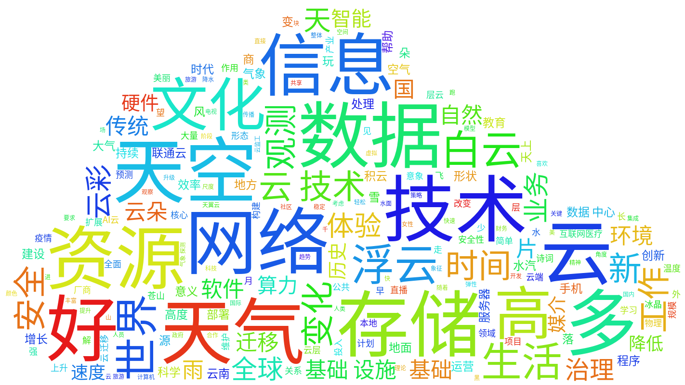

Nous allons faire une première analyse avec les scripts PALS récupérés dans dépôt Git de M. Dupont.
Après consultation de la documentation, et du fichier d'exercice pals. Nous faisons un prétraitement pour que les scripts PALS puissent traiter les textes donnés.
Nous lançons le script cooccurrents.py
avec la commande ci-contre. Nous ciblons la recherche sur nuage et ses dérivés
avec l'utilisation d'une expression régulière.
Après avoir lancée une première fois le script, nous voyons dans le résultat des problèmes d'encodage mal nettoyé malgrès le fichier converti en UTF-8.
Ansi, pour avoir un résultat plus parlant, nous avons écrit un
script python*
qui tente de corriger les erreurs d'encodage du à la reconversion.
Le résultat se trouve dans le bouton "Dumps-cooccurents"
* (click to show the code)
# Prétraitement des problèmes d'encodages
python fix_encoding.py contextes-fr.txt contextes-fr-clean.txt
python fix_encoding.py dumps-text-fr.txt dumps-text-fr-clean.txt
# Cooccurrences des fichiers dumps-text
python cooccurrents.py ../dumps-text-fr-clean.txt --target "(N|n)uage(s|ux|use|uses)?" --match-mode regex > ../result/francais/dumps-cooccurents.tsv 2> /dev/null
# Cooccurrences des fichiers contextes
python cooccurrents.py ../contextes-fr-clean.txt --target "(N|n)uage(s|ux|use|uses)?" --match-mode regex > ../result/francais/contextes-cooccurents.tsv 2> /dev/null
wordcloud_cli --text ../contextes-zh-clean.txt --imagefile cloud_zh_contextes.png --mask mask.png --stopwords stopwords_chinois.txt --fontfile /usr/share/fonts/truetype/noto/NotoSansCJK-Regular.ttc --background white --scale 3 --margin 2 --max_font_size 50 --prefer_horizontal 0.98
